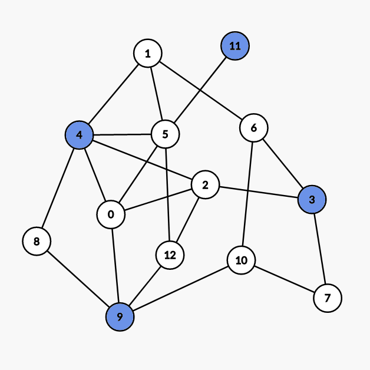
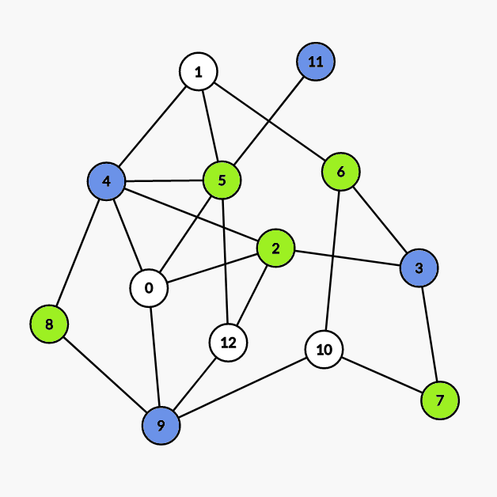

图的着色
点着色
（讨论的是无自环无向图）
对无向图顶点着色，且相邻顶点不能同色．若 G 是 𝑘k \- 可着色的，但不是 (𝑘 −1)(k−1)\- 可着色的，则称 k 是 G 的色数，记为 𝜒(𝐺)χ(G)．
\- 可着色的，但不是 (𝑘 −1)(k−1)\- 可着色的，则称 k 是 G 的色数，记为 𝜒(𝐺)χ(G)．
对任意图 G，有 𝜒(𝐺) ≤Δ(𝐺) +1χ(G)≤Δ(G)+1，其中 Δ(𝐺)Δ(G) 为最大度．
Brooks 定理
设连通图不是完全图也不是奇圈，则 𝜒(𝐺) ≤Δ(𝐺)χ(G)≤Δ(G)．
证明
证明
设 |𝑉(𝐺)| =𝑛|V(G)|=n，考虑数学归纳法．
首先，𝑛 ≤3n≤3 时，命题显然成立．
接下来，假设对于 𝑛 −1n−1 时的命题成立，下面我们要逐步强化命题．
不妨只考虑 Δ(𝐺)Δ(G)\- 正则图，因为对于非正则图来说，可以看作在正则图里删去一些边构成的，而这一过程并不会影响结论．
对于任意不是完全图也不是奇圈的正则图 G，任取其中一点 v，考虑子图 𝐻 :=𝐺 −𝑣H:=G−v，由归纳假设知 𝜒(𝐻) ≤Δ(𝐻) =Δ(𝐺)χ(H)≤Δ(H)=Δ(G)，接下来我们只需证明在 H 中插入 v 不会影响结论即可．
令 Δ :=Δ(𝐺)Δ:=Δ(G)，设 H 染的 ΔΔ 种颜色分别为 𝑐1,𝑐2,…,𝑐Δc1,c2,…,cΔ，v 的 ΔΔ 个邻接点为 𝑣1,𝑣1,…,𝑣Δv1,v1,…,vΔ．不妨假设 v 的这些邻接点颜色两两不同，否则命题得证．
接下来我们设所有在 H 中染成 𝑐𝑖ci 或 𝑐𝑗cj 的点以及它们之间的所有边构成子图 𝐻𝑖,𝑗Hi,j．不妨假设任意 2 个不同的点 𝑣𝑖vi，𝑣𝑗vj 一定在 𝐻𝑖,𝑗Hi,j 的同一个连通分量中，否则若在两个连通分量中的话，可以交换其中一个连通分量所有点的颜色，从而 𝑣𝑖vi，𝑣𝑗vj 颜色相同．
这里的交换颜色指的是若图中只有两种颜色 a，b，那么把图中原来染成颜色 a 的点全部染成颜色 b，把图中原来染成颜色 b 的点全部染成颜色 a．
我们设上述连通分量为 𝐶𝑖,𝑗Ci,j，那么 𝐶𝑖,𝑗Ci,j 一定只能是 𝑣𝑖vi 到 𝑣𝑗vj 的路．因为 𝑣𝑖vi 在 H 中的度为 Δ −1Δ−1，所以 𝑣𝑖vi 在 H 中的邻接点颜色一定两两不同，否则可以给 𝑣𝑖vi 染别的颜色，从而和 v 的其他邻接点颜色重复，所以 𝑣𝑖vi 在 𝐶𝑖,𝑗Ci,j 中邻接点数量为 1，𝑣𝑗vj 同理．然后我们在 𝐶𝑖,𝑗Ci,j 中取一条 𝑣𝑖vi 到 𝑣𝑗vj 的路，令其为 P，若 𝐶𝑖,𝑗 ≠𝑃Ci,j≠P，那么我们沿着 P 顺次给路上的点染色，设遇到的第一个度数大于 2 的点为 u，注意到 u 的邻接点最多只用了 Δ −2Δ−2 种颜色，所以 u 可以重新染色，从而使 𝑣𝑖vi，𝑣𝑗vj 不连通．
然后我们不难发现，对任意 3 个不同的点 𝑣𝑖vi，𝑣𝑗vj，𝑣𝑘vk，𝑉(𝐶𝑖,𝑗) ∩𝑉(𝐶𝑗,𝑘) ={𝑣𝑗}V(Ci,j)∩V(Cj,k)={vj}．
到这里我们对命题的强化工作就已经做完了．
接下来就很简单．首先，如果 v 的邻接点两两相邻，那么命题得证．不妨设 𝑣1v1，𝑣2v2 不相邻，在 𝐶1,2C1,2 中取 𝑣1v1 的邻接点 w，交换 𝐶1,3C1,3 中的颜色．得到的新图中，𝑤 ∈𝑉(𝐶1,2) ∩𝑉(𝐶2,3)w∈V(C1,2)∩V(C2,3)，矛盾．
至此命题证明完毕．
Welsh–Powell 算法
Welsh–Powell 算法是一种在 不限制最大着色数 时寻找着色方案的贪心算法．
对于无自环无向图 G，设 𝑉(𝐺) :={𝑣1,𝑣2,…,𝑣𝑛}V(G):={v1,v2,…,vn} 满足．
deg(𝑣𝑖) ≥deg(𝑣𝑖+1), ∀1 ≤𝑖 ≤𝑛 −1deg(vi)≥deg(vi+1), ∀1≤i≤n−1
按 Welsh–Powell 算法着色后的颜色数至多为 max𝑛𝑖=1min{deg(𝑣𝑖) +1,𝑖}maxi=1nmin{deg(vi)+1,i}, 该算法的时间复杂度为 𝑂(𝑛max𝑛𝑖=1min{deg(𝑣𝑖)+1,𝑖}) =𝑂(𝑛2)O(nmaxi=1nmin{deg(vi)+1,i})=O(n2)．
过程
- 将当前未着色的点按度数降序排列．
- 将第一个点染成一个未被使用的颜色．
- 顺次遍历接下来的点，若当前点和所有与第一个点颜色 相同 的点 不相邻 ，则将该点染成与第一个点相同的颜色．
- 若仍有未着色的点，则回到步骤 1, 否则结束．
示例如下：

（由 Graph Editor 生成）
我们先对点按度数降序排序，得：
| 次序 | 1 | 2 | 3 | 4 | 5 | 6 | 7 | 8 | 9 | 10 | 11 | 12 | 13 |
|---|---|---|---|---|---|---|---|---|---|---|---|---|---|
| 点的编号 | 4 | 5 | 0 | 2 | 9 | 1 | 3 | 6 | 10 | 12 | 7 | 8 | 11 |
| 度数 | 5 | 5 | 4 | 4 | 4 | 3 | 3 | 3 | 3 | 3 | 2 | 2 | 1 |
| min{deg(𝑣𝑖) +1,𝑖}min{deg(vi)+1,i} | 1 | 2 | 3 | 4 | 5 | 4 | 4 | 4 | 4 | 4 | 3 | 3 | 2 |
所以 Welsh–Powell 算法着色后的颜色数最多为 5．
另外因为该图有子图 𝐶3C3, 所以色数一定大于等于 3．
- 第一次染色：

染 4 9 3 11 号点． - 第二次染色：

染 5 2 6 7 8 号点． - 第三次染色：

染 0 1 10 12 号点．
证明
证明
对于无自环无向图 G，设 𝑉(𝐺) :={𝑣1,𝑣2,…,𝑣𝑛}V(G):={v1,v2,…,vn} 满足
deg(𝑣𝑖) ≥deg(𝑣𝑖+1), ∀1 ≤𝑖 ≤𝑛 −1deg(vi)≥deg(vi+1), ∀1≤i≤n−1
令 𝑉0 =∅V0=∅, 我们取 𝑉(𝐺) ∖⋃𝑚−1𝑖=0𝑉𝑖V(G)∖⋃i=0m−1Vi 中的子集 𝑉𝑚Vm, 其中的元素满足
- 𝑣𝑘𝑚 ∈𝑉𝑚vkm∈Vm, 其中 𝑘𝑚 =min{𝑘 :𝑣𝑘 ∉⋃𝑚−1𝑖=0𝑉𝑖}km=min{k:vk∉⋃i=0m−1Vi}
- 若
{𝑣𝑖𝑚,1,𝑣𝑖𝑚,2,…,𝑣𝑖𝑚,𝑙𝑚} ⊂𝑉𝑚, 𝑖𝑚,1 <𝑖𝑚,2 <⋯ <𝑖𝑚,𝑙𝑚{vim,1,vim,2,…,vim,lm}⊂Vm, im,1<im,2<⋯<im,lm
则 𝑣𝑗 ∈𝑉𝑚vj∈Vm 当且仅当
- 𝑗 >𝑖𝑚,𝑙𝑚j>im,lm
- 𝑣𝑗vj 与 𝑣𝑖𝑚,1,𝑣𝑖𝑚,2,…,𝑣𝑖𝑚,𝑙𝑚vim,1,vim,2,…,vim,lm 均不相邻
显然若将 𝑉𝑖Vi 中的点染成第 i 种颜色，则该染色方案即为 Welsh–Powell 算法给出的方案，显然有
- 𝑉1 ≠∅V1≠∅
- 𝑉𝑖 ∩𝑉𝑗 =∅ ⟺ 𝑖 ≠𝑗Vi∩Vj=∅⟺i≠j
- ∃𝛼(𝐺) ∈ℕ∗,∀𝑖 >𝛼(𝐺), 𝑠.𝑡. 𝑉𝑖 =∅∃α(G)∈N∗,∀i>α(G), s.t. Vi=∅
我们只需要证明：
⋃𝛼(𝐺)𝑖=1𝑉𝑖 =𝑉(𝐺)⋃i=1α(G)Vi=V(G)
其中
𝜒(𝐺) ≤𝛼(𝐺) ≤max𝑛𝑖=1min{deg(𝑣𝑖) +1,𝑖}χ(G)≤α(G)≤maxi=1nmin{deg(vi)+1,i}
上式左边的不等号显然成立，我们考虑右边．
首先我们不难得出：
若 𝑣 ∉⋃𝑚𝑖=1𝑉𝑖v∉⋃i=1mVi，则 v 与 𝑉1,𝑉2,…,𝑉𝑚V1,V2,…,Vm 中分别至少有一个点相邻，从而有 deg(𝑣) ≥𝑚deg(v)≥m
进而
𝑣𝑗 ∈⋃deg(𝑣𝑗)+1𝑖=1𝑉𝑖vj∈⋃i=1deg(vj)+1Vi
另一方面，基于序列 {𝑉𝑖}{Vi} 的构造方法，我们不难发现
𝑣𝑗 ∈⋃𝑗𝑖=1𝑉𝑖vj∈⋃i=1jVi
两式结合即得证．
边着色
对无向图的边着色，要求相邻的边涂不同种颜色．若 G 是 k- 边可着色的，但不是 (𝑘 −1)(k−1)\- 边可着色的，则称 k 是 G 的边色数，记为 𝜒′(𝐺)χ′(G)．
Vizing 定理
设 G 是简单图，则 Δ(𝐺) ≤𝜒′(𝐺) ≤Δ(𝐺) +1Δ(G)≤χ′(G)≤Δ(G)+1
若 G 是二部图，则 𝜒′(𝐺) =Δ(𝐺)χ′(G)=Δ(G)
当 𝑛n 为奇数（𝑛 ≠1n≠1）时，𝜒′(𝐾𝑛) =𝑛χ′(Kn)=n; 当 𝑛n 为偶数时，𝜒′(𝐾𝑛) =𝑛 −1χ′(Kn)=n−1
二分图 Vizing 定理的构造性证明
证明
按照顺序在二分图中加边．
我们在尝试加入边 (𝑥,𝑦)(x,y) 的时候，我们尝试寻找对于 𝑥x 和 𝑦y 的编号最小的尚未被使用过的颜色，假设分别为 𝑙𝑥lx 和 𝑙𝑦ly．
如果 𝑙𝑥 =𝑙𝑦lx=ly 此时我们可以直接将这条边的颜色设置为 𝑙𝑥lx．
否则假设 𝑙𝑥 <𝑙𝑦lx<ly, 我们可以尝试将节点 𝑦y 连出去的颜色为 𝑙𝑥lx 的边的颜色修改为 𝑙𝑦ly．
修改的过程可以被近似的看成是一条从 𝑦y 出发，依次经过颜色为 𝑙𝑥,𝑙𝑦,⋯lx,ly,⋯ 的边的有限唯一增广路．
因为增广路有限所以我们可以将增广路上所有的边反色，即原来颜色为 𝑙𝑥lx 的修改为 𝑙𝑦ly，原来颜色为 𝑙𝑦ly 的修改为 𝑙𝑥lx．
根据二分图的性质，节点 𝑥x 不可能为增广路节点，否则与最小未使用颜色为 𝑙𝑥lx 矛盾．
所以我们可以在增广之后直接将连接 𝑥x 和 𝑦y 的边的颜色设为 𝑙𝑥lx．
总构造时间复杂度为 𝑂(𝑛𝑚)O(nm)．
示例代码 UVa10615 Rooks
---|---
一道很不简单的例题 [uoj 444 二分图](https://uoj.ac/problem/444)
本题为笔者于 2018 年命制的集训队第一轮作业题．
首先我们可以发现答案下界为度数不为 k 倍数的点的个数．
下界的构造方法是对二分图进行拆点．
若 𝑑𝑒𝑔𝑟𝑒𝑒mod𝑘 ≠0degreemodk≠0, 我们将其拆为 𝑑𝑒𝑔𝑟𝑒𝑒/𝑘degree/k 个度数为 k 的节点和一个度数为 𝑑𝑒𝑔𝑟𝑒𝑒mod𝑘degreemodk 的节点．
若 𝑑𝑒𝑔𝑟𝑒𝑒mod𝑘 =0degreemodk=0, 我们将其拆为 𝑑𝑒𝑔𝑟𝑒𝑒/𝑘degree/k 个度数为 k 的节点．
拆出来的点在原图中的意义相同，也就是说，在满足度数限制的情况下，一条边端点可以连接任意一个拆出来的点．
根据 Vizing 定理，我们显然可以构造出该图的一种 k 染色方案．
删边部分由于和 Vizing 定理关系不大这里不再展开．
有兴趣的读者可以自行阅读笔者当时写的题解．
## 色多项式
𝑃(𝐺,𝑘)P(G,k) 表示 G 的不同 k 着色方式的总数．
𝑃(𝐾𝑛,𝑘) =𝑘(𝑘 −1)⋯(𝑘 −𝑛 +1)P(Kn,k)=k(k−1)⋯(k−n+1)
𝑃(𝑁𝑛,𝑘) =𝑘𝑛P(Nn,k)=kn
在无向无环图 G 中，
1. 𝑒 =(𝑣𝑖,𝑣𝑗) ∉𝐸(𝐺)e=(vi,vj)∉E(G)，则 𝑃(𝐺,𝑘) =𝑃(𝐺 ∪𝑒,𝑘) +𝑃(𝐺 ∖𝑒,𝑘)P(G,k)=P(G∪e,k)+P(G∖e,k)
2. 𝑒 =(𝑣𝑖,𝑣𝑗) ∈𝐸(𝐺)e=(vi,vj)∈E(G)，则 𝑃(𝐺,𝑘) =𝑃(𝐺 −𝑒,𝑘) −𝑃(𝐺 ∖𝑒,𝑘)P(G,k)=P(G−e,k)−P(G∖e,k)
定理：设 𝑉1V1 是 G 的点割集，且 𝐺[𝑉1]G[V1] 是 G 的 |𝑉1||V1| 阶完全子图，𝐺 −𝑉1G−V1 有 𝑝(𝑝 ≥2)p(p≥2) 个连通分支，则：
𝑃(𝐺,𝑘) =Π𝑝𝑖=1(𝑃(𝐻𝑖,𝑘))𝑃(𝐺[𝑉1],𝑘)𝑝−1P(G,k)=Πi=1p(P(Hi,k))P(G[V1],k)p−1
其中 𝐻𝑖 =𝐺[𝑉1 ∪𝑉(𝐺𝑖)]Hi=G[V1∪V(Gi)]
## 参考资料
1. [Graph coloring - Wikipedia](https://en.wikipedia.org/wiki/Graph_coloring)
2. Welsh, D. J. A.; Powell, M. B. (1967), "[An upper bound for the chromatic number of a graph and its application to timetabling problems](https://doi.org/10.1093%2Fcomjnl%2F10.1.85)", The Computer Journal, 10 (1): 85–86
* * *
> __本页面最近更新： 2026/1/7 08:56:54，[更新历史](https://github.com/OI-wiki/OI-wiki/commits/master/docs/graph/color.md)
> __发现错误？想一起完善？[在 GitHub 上编辑此页！](https://oi-wiki.org/edit-landing/?ref=/graph/color.md "edit.link.title")
> __本页面贡献者：[Tiphereth-A](https://github.com/Tiphereth-A), [zhouyuyang2002](https://github.com/zhouyuyang2002), [c-forrest](https://github.com/c-forrest), [Chrogeek](https://github.com/Chrogeek), [CoderOJ](https://github.com/CoderOJ), [Enter-tainer](https://github.com/Enter-tainer), [iamtwz](https://github.com/iamtwz), [ImpleLee](https://github.com/ImpleLee), [Ir1d](https://github.com/Ir1d), [lyccrius](https://github.com/lyccrius), [ouuan](https://github.com/ouuan)
> __本页面的全部内容在**[CC BY-SA 4.0](https://creativecommons.org/licenses/by-sa/4.0/deed.zh) 和 [SATA](https://github.com/zTrix/sata-license)** 协议之条款下提供，附加条款亦可能应用